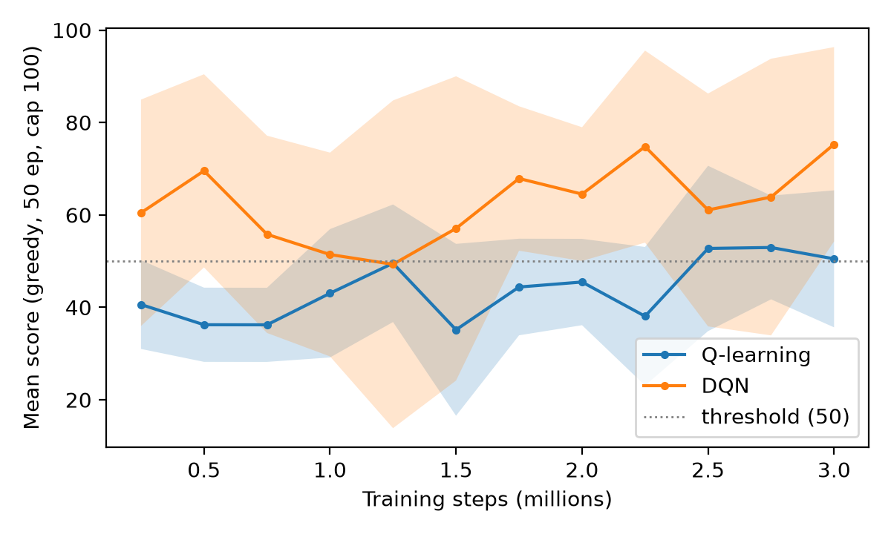

Experimental setup
- Environment
flappy-bird-gymnasium0.4.0,FlappyBird-v0, raw pixel observation (no lidar). Score is the number of pipes passed.- State
- Three features for both agents: horizontal distance to the pipe that currently blocks the bird, vertical offset to the gap centre, and vertical velocity. The bird's absolute height is used only in ablations.
- Q-learning
- Table over 720 discretised states, learning rate 0.1, discount 0.99.
- DQN
- 3-64-64-2 ReLU network, Adam at 3e-4, batch 64, replay buffer 50k, target network synced every 2k steps, Huber loss.
- Exploration
- Epsilon falls from 1.0 to 0.05 over the first 300k steps for both agents. In the exploratory branch the bird flaps with probability 0.05, because a 50% flap rate pins it to the ceiling and it dies at the first pipe.
- Budget
- Five training seeds (0 to 4), 3M environment steps each. Checkpoints at 500k, 1M, 2M and 3M. Hyperparameters were tuned on separate seeds (100 to 102).
- Evaluation
- Greedy policy (no exploration). Final scores: 100 episodes per seed with a limit of 500 pipes, on an evaluation environment seeded with the training seed plus 10000. Learning curves use a cheaper periodic evaluation (50 episodes, limit 100, every 250k steps). Numbers are the mean and standard deviation across the five seeds.
- Baselines
- Uniform random, biased random (flap probability 0.1) and a hand-written rule that flaps when the bird is more than 8 px below the gap centre.
Main results
Final evaluation, 100 greedy episodes per seed, limit 500 pipes. Mean ± standard deviation over 5 seeds.
| Agent | Score (pipes) | Reached limit (%) | Episode length (steps) |
|---|---|---|---|
| Random (uniform) | 0.0 ± 0.0 | 0.0 ± 0.0 | 50 ± 0 |
| Random (biased, p = 0.1) | 0.0 ± 0.0 | 0.0 ± 0.0 | 50 ± 0 |
| Heuristic | 31.4 ± 2.2 | 0.0 ± 0.0 | 1231 ± 84 |
| Q-learning, 1M steps | 74.7 ± 39.3 | 1.4 ± 2.2 | 2859 ± 1481 |
| Q-learning, 3M steps | 84.7 ± 61.1 | 2.0 ± 4.5 | 3239 ± 2299 |
| DQN, 1M steps | 81.2 ± 42.1 | 2.0 ± 3.1 | 3104 ± 1590 |
| DQN, 3M steps | 253.5 ± 192.3 | 37.6 ± 43.8 | 9587 ± 7234 |
The DQN mean at 3M is pulled up by two seeds that nearly always reach the limit (432 and 472); the other three score 57, 83 and 224. Q-learning's seeds at 3M are 47, 50, 67, 68 and 193 (rounded). At 3M all ten runs score above the hand-written rule's 31.4.


Taking the first evaluation that reaches a mean score of 50 as a threshold, 4 of 5 Q-learning seeds get there (mean 1.81M ± 0.80M steps) and 5 of 5 DQN seeds do, four of them at the first evaluation at 250k. That result is limited by the 250k evaluation spacing, so we do not report DQN as faster.
Ablations
One factor changes at a time against the reference run (720 states, no height input, alive reward on, flap probability 0.05). Thirteen configurations, five seeds and 3M steps each, same evaluation as above.

- A finer Q-table scored lower: 3600 states gave 9.3 ± 4.0 against 84.7 ± 61.1 for the reference (Welch p = 0.05, uncorrected). The likely cause is a sparse table that rarely revisits states, though we did not measure visit counts. The coarser table and the two tables with height added also scored lower but cannot be told apart from the reference (p between 0.17 and 0.23).
- Adding the bird's absolute height as a fourth DQN input did not help: all five seeds ended between 14 and 38 at 3M, against 253.5 ± 192.3 for the reference (p = 0.06). We expected the network to use the extra information without the sparsity problem the table has.
- Removing the +0.1 survival reward did not stop learning in either method (Q-learning 134.4 ± 119.4, DQN 246.5 ± 176.8). A 50% flap rate in exploration gave the lowest DQN mean (50.3 ± 42.8), but with this spread it is not distinguishable from the reference (p = 0.08).
With 13 comparisons and five seeds, no ablation survives a multiple-comparison correction (the Bonferroni threshold is about 0.004). We describe these as observations, not established effects.
Agent behaviour
Rollouts of the greedy policies on the final-evaluation environment. Videos do not play automatically.
DQN, seed 2, 3M steps
Q-learning, seed 4, 3M steps
DQN, seed 2, 1M steps
Across both methods at 3M, every crash is a pipe collision within 10 px of the pipe's leading edge, and none is a ground collision. Whether the bird hits the upper or lower pipe depends on the seed, not on the method.
Limitations
- Five seeds per configuration. The standard deviation across DQN seeds is close to the mean, so the comparison cannot support a claim that one method is better.
- Scores move a lot between checkpoints of the same run, so a single checkpoint is a noisy summary of an agent. The 3M DQN mean is the highest of its four checkpoints.
- The limit of 500 pipes truncates the best runs. 37.6% of DQN's 3M evaluation episodes hit it, so the true mean is higher than reported.
- Hyperparameters were tuned on three seeds. Tuning DQN's stability (learning rate, target sync, buffer size) did not help, and we kept the original configuration. We use vanilla DQN with no extensions.
- P-values are uncorrected and based on five seeds. Treat them as a rough guide.
- The success videos are selected episodes and show only the start of an episode.
- One environment and one feature set. The results say nothing about other state representations beyond the ablations above.
Reproducing
Training seeds are 0 to 4. Each evaluation environment is seeded with the training seed plus 10000 and reset once per evaluation, so a checkpoint's score is deterministic. Tuning used seeds 100 to 102. Dependency versions are pinned in requirements.txt (verified on Python 3.14, macOS).
python -m src.train --agent dqn --seed 0 --steps 3000000 \
--eval-every 250000 --eval-episodes 50 \
--checkpoint-steps 500000 1000000 2000000 3000000 \
--checkpoint-dir results/main/dqn/checkpoints \
--out results/main/dqn/dqn_seed0.json
python -m scripts.final_eval --root results/mainRaw logs and checkpoints are not in the repository. The README lists every command, including the ablations, the report scripts and the video script.